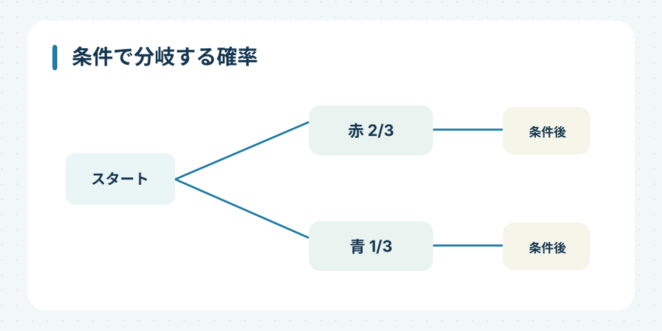

数学 / UNIVERSITY ENTRANCE EXAM
条件付き確率の求め方｜樹形図と公式
「Bが起きたと分かっているときAが起こる確率」を条件付き確率といいます。全体の標本空間がBに絞られる点を理解するのが最短ルートです。
∑
このページで学べること
P(A|B)と独立の違いを例題で整理。要点を読んだら、最後の確認問題で理解度をチェックしましょう。
POINT 01
条件付き確率の意味

P(A|B) = P(A∩B) / P(B) ※ P(B)>0
記号 P(A|B) は「Bという条件のもとでAが起こる確率」です。分母は元の全体ではなく Bが起こる確率になります。
例｜さいころ1個
B：偶数が出た（{2,4,6}）、A：4以上が出た。Bの中でAに当てはまるのは{4,6}なので 2/3。
POINT 02
樹形図で見れば順序が明確
袋に赤玉2個、青玉1個。戻さず2個引くとき、1個目が赤の条件で2個目が赤となる確率は 1/2。1回目に赤を引いた結果、袋の残りが赤1・青1になっているからです。
最初から2個とも赤の確率なら (2/3)×(1/2)=1/3。条件付き確率と同時確率を取り違えないようにしましょう。
POINT 03
独立との違い
AとBが独立なら P(A|B)=P(A)。言い換えると、Bが起きたという情報がAの確率を変えません。独立なら P(A∩B)=P(A)P(B) も成り立ちます。
「排反」は同時に起きないこと。「独立」は片方の情報で他方の確率が変わらないこと。一般に別の概念です。
PRACTICE
確認問題に挑戦！
全3問。答えを考えてから「解答と解説を見る」を押してね。
Q01
さいころで偶数と分かっているとき、6が出た確率は？
解答と解説を見る ＋
正解・解答例
1/3
可能な結果は2,4,6の3つ、6はそのうち1つです。
Q02
赤玉2個・青玉1個の袋から戻さず2回引き、最初が青なら次が赤である確率は？
解答と解説を見る ＋
正解・解答例
1
青を先に引くと残り2個は赤だけです。
Q03
独立な事象A,Bについて P(A)=1/2、P(B)=1/3。P(A∩B)は？
解答と解説を見る ＋
正解・解答例
1/6
独立だから1/2×1/3=1/6。
今日のまとめ
条件付き確率は分母の「条件の範囲」を意識する。排反と独立は別。
ここまで読めたら、ひと区切り。
理解できたら学習済みにチェックして、次の記事へ。
記事について
StudyMasterの無料学習コンテンツです。AIを補助的に用いて作成しています。例題・解答は公開前にご自身でも確認してください。内容に誤りがある場合は、学校の教科書などと照合してください。
公開・更新：2026年11月12日